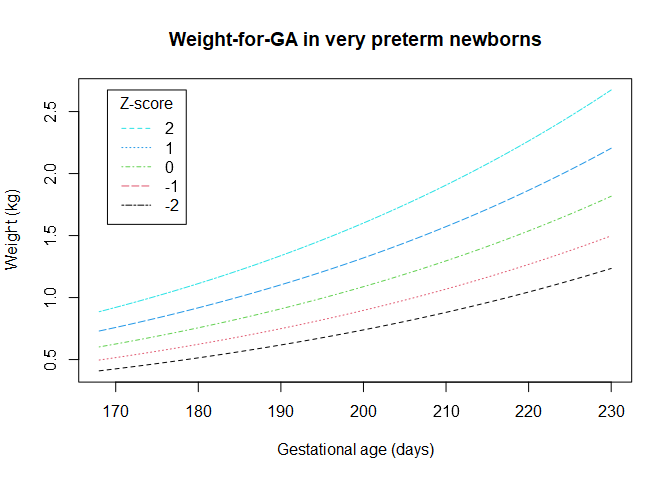

Overview
Produced as part of the Guidance for International Growth Standards project, gigs provides a single, simple interface for working with the WHO Child Growth Standards and outputs from the INTERGROWTH-21st project. You will find functions for converting between anthropometric measures (e.g. weight or length) to z-scores and percentiles, and the inverse. Also included are functions for classifying newborn and infant growth according to literature-based cut-offs.
Installation
You can install gigs using the remotes package, provided you’re using a version of R which is equal to or more recent than R 4.1.0:
# install.packages("remotes")
remotes::install_github("lshtm-gigs/gigs")Available standards
-
ig_nbs- INTERGROWTH-21st standards for newborn size (including very preterm)Component standards
Acronym Description Unit gest_agerangewfgaWeight-or-gestational age kg 168 to 300 days lfgaLength-for-gestational age cm 168 to 300 days hcfgaHead circumference-for-gestational age cm 168 to 300 days wlrfgaWeight-to-length ratio-for-gestational age kg/cm 168 to 300 days ffmfgaFat-free mass-for-gestational age kg 266 to 294 days bfpfgaBody fat percentage-for-gestational age % 266 to 294 days fmfgaFat mass-for-gestational age kg 266 to 294 days -
ig_png- INTERGROWTH-21st standards for postnatal growth in preterm infantsComponent standards
Acronym Description Unit xrangewfaweight-for-age kg 27 to <64 exact weeks lfalength-for-age cm 27 to <64 exact weeks hcfahead circumference-for-age cm 27 to <64 exact weeks wflweight-for-length kg 35 to 65 cm -
who_gs- WHO Child Growth Standards for term infantsComponent standards
Acronym Description Unit xrangewfaweight-for-age kg 0 to 1856 days bfaBMI-for-age kg/m2 0 to 1856 days lhfalength/height-for-age cm 0 to 1856 days hcfahead circumference-for-age cm 0 to 1856 days wflweight-for-height kg 45 to 110 cm wfhweight-for-length kg 65 to 120 cm acfaarm circumference-for-age cm 91 to 1856 days ssfasubscapular skinfold-for-age mm 91 to 1856 days tsfatriceps skinfold-for-age mm 91 to 1856 days
Conversion functions
Conversion functions are named according to the set of standards in use, the component standard from that set, then the type of conversion. For example, to convert values to z-scores in the weight-for-GA standard from the INTERGROWTH-21st Newborn Size Standards would be: ig_nbs/_wfga/_value2zscore()
Similarly, the conversion of length-for-age values to percentiles in term and preterm infants could be performed with the WHO Child Growth Standards and INTERGROWTH-21st Postnatal Growth of Preterm Infants Standards, respectively:
- Term infants:
who_gs/_lhfa/_value2zscore() - Preterm infants:
ig_png/_lfa/_value2percentile()
If the component standard is not included in the function call, it should be passed to the acronym parameter of the general function call. For example, these two function calls would behave in the same way:
ig_nbs_value2zscore(y = 25.7, gest_age = 182, sex = "F", acronym = "hcfga") |>
round(digits = 2)
#> [1] 1.18
ig_nbs_hcfga_value2zscore(headcirc_cm = 25.7, gest_age = 182, sex = "F") |>
round(digits = 2)
#> [1] 1.18A vector of acronym values can be used if you want to convert with different standards for each input.
Values to z-scores/percentiles
These functions allow easy conversion from measured values to z-scores or percentiles for the standard used.
# Convert from z-scores for individual values...
ig_nbs_value2zscore(y = 0.785, gest_age = 182, sex = "F", acronym = "wfga") |>
round(digits = 2)
#> [1] 0
# .. or for multiple inputs
ig_nbs_wfga_value2percentile(weight_kg = 0.785, gest_age = seq(175, 196, by = 7), sex = "F") |>
round(digits = 2)
#> [1] 0.75 0.50 0.25 0.09
# You can do the same for percentiles
ig_png_wfa_value2percentile(weight_kg = c(2.86, 3.12, 3.12, 3.43, 3.77, 4.10),
pma_weeks = 40,
sex = "M") |>
round(digits = 2)
#> [1] 0.10 0.25 0.25 0.50 0.75 0.90Z-scores/percentiles to values
These functions convert z-scores to expected anthropometric measurements. They are mostly useful for the creation of reference curves (see below).
# Convert from z-scores for individual values...
ig_nbs_zscore2value(z = 0, gest_age = 182, sex = "F", acronym = "wfga") |>
round(digits = 3)
#> [1] 0.785
# .. or for multiple inputs
ig_nbs_wfga_zscore2value(z = 0, gest_age = seq(182, 204, by = 7), sex = "F") |>
round(digits = 3)
#> [1] 0.785 0.893 1.013 1.147
# You can do the same for percentiles
ig_png_wfa_percentile2value(p = c(0.1, 0.25, 0.5, 0.75, 0.9),
pma_weeks = 40,
sex = "M") |>
round(digits = 2)
#> [1] 2.87 3.12 3.43 3.77 4.11Reference curves
We can use gigs to generate reference curves for the standards by getting curves for the expected weight at multiple z-scores across multiple gestational ages. We would usually recommend ggplot2 for such visualisation, but do not use it here to reduce our package’s dependencies.
z_score_range <- -2:2
gestage_range <- 168:230
ref <- mapply(z_score_range,
FUN = function(z) {
gigs::ig_nbs_wfga_zscore2value(z = z,
gest_age = gestage_range,
sex = "F")
})
matplot(ref, x = gestage_range, col = 1:5, type = "l", lty = 2:6,
xlab = "Gestational age (days)",
ylab = "Weight (kg)")
title(main = "Weight-for-GA in very preterm newborns")
legend(x = min(gestage_range) + 1, y = ref[length(ref)], legend = 2:-2,
title = "Z-score", col = 5:1, lty = 2:6)
Classification functions
These functions allow for quick identification of at-risk infants through classification of suboptimal growth. The cut-offs used are sourced from research literature; you can check the function documentation to see these sources.
# Size for gestational age
classify_sga(
weight_kg = c(2.5, 3.2, 4.0),
gest_age = 277,
sex = "M"
)
#> [1] SGA AGA LGA
#> Levels: SGA AGA LGA
# Stunting, i.e. low length increase relative to age
classify_stunting(
lenht_cm = c(42.3, 75.4, 72.83),
age_days = c(252, 525, 245),
ga_at_birth = c(238, 259, 266),
sex = "M",
lenht_method = "H"
)
#> [1] implausible stunting normal
#> Levels: implausible stunting_severe stunting normal
# Wasting, i.e. low weight increase relative to length/height
classify_wasting(
weight_kg = c(5.75, 2.18, 5.30, 6.75),
lenht_cm = c(67.7, 46.6, 55.8, 80.1),
sex = c("F", "M", "F", "M"),
lenht_method = c("H", "L", "L", "H")
)
#> [1] wasting_severe wasting normal implausible
#> Levels: implausible wasting_severe wasting normal overweight
# Weight-for-age, i.e. low weight increase relative to age
classify_wfa(
weight_kg = c(2.1, 7.2, 6.1, 9.1, 9.4),
age_days = c(435, 501, 323, 201, 154),
ga_at_birth = c(36, 27, 37, 40, 28),
sex = c("M", "M", "F", "F", "F")
)
#> [1] implausible underweight_severe underweight normal
#> [5] overweight
#> Levels: implausible underweight_severe underweight normal overweight